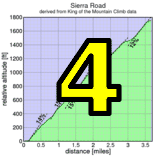

|  |  |
 |

|
| Cycling is a contact sport (Josh Hadley) |
Low-Key is back!
Despite a bit of misty rain as riders approached the finish line, this week's climb in Henry Coe State Park was a spectacular success! Sure, it was a bit wet riding to the start line, but as start-line coordinator Barry Burr organized the troops, the clouds scattered, and shadows were even spotted as the first group moved into the first switchback.
Coordinator Gary Griffin led an experienced volunteer crew this week like a well-oiled machine. Despite the damp conditions at the finish, the finish line crew got everyone's number. And riders got to enjoy the wonderful views from the park.
Thanks to all who braved the start line drizzle, riders and volunteers alike, and came to this week's climb!
Strava T-shirt qualifiers indicated with orange background.
| pl | # | name | team | cat | time | mph | fph | score |
|---|---|---|---|---|---|---|---|---|
| 1 | 236 | Carl Nielson | Sr's & Mr's of No Mercy | 50+ | 31:43 | 12.60 | 4164 | 127.64 |
| 2 | 515 | Tom Roberts | Western Wheelers | 40+ | 31:49 | 12.56 | 4151 | 127.24 |
| 3 | 53 | Tim Clark | Low-Key | 40+ | 32:13 | 12.40 | 4099 | 125.66 |
| 4 | 34 | Jacob Berkman | Mission Cycling | 30+ | 33:23 | 11.97 | 3956 | 121.27 |
| 5 | 509 | Mario Hernandez | Mission Cycling | 3 | 33:53 | 11.79 | 3897 | 119.48 |
| 6 | 513 | Dave Mesa | Chica Sexy | 3 | 34:20 | 11.64 | 3846 | 117.91 |
| 7 | 88 | Rich Hill | LGBRC | 45+ | 34:35 | 11.55 | 3819 | 117.06 |
| 8 | 326 | Clark Foy | San Jose Bike Club | U23 | 34:49 | 11.48 | 3793 | 116.28 |
| 9 | 1 | Dan Connelly | Low-Key | 3 | 34:54 | 11.45 | 3784 | 116.00 |
| 10 | 301 | Marcel Appelman | Mission Cycling | 40+ | 35:03 | 11.40 | 3768 | 115.50 |
| 11 | 501 | David Bangor | Chica Sexy | 4 | 35:19 | 11.31 | 3739 | 114.63 |
| 12 | 123 | Christian Paquet | Doogie | 50+ | 35:20 | 11.31 | 3738 | 114.58 |
| 13 | 7 | James Porter | Western Wheelers | 3 | 35:23 | 11.29 | 3732 | 114.41M |
| 14 | 218 | Tom Gardin | Low-Key | 45+ | 35:39 | 11.21 | 3704 | 113.56 |
| 15 | 72 | Brian Edwards | The Dirkers | 35:48 | 11.16 | 3689 | 113.08 | |
| 16 | 65 | J.D. Daniels | Eden Bikes | 35+ | 36:29 | 10.95 | 3620 | 110.96 |
| 17 | 104 | Michael Kolb | 45+ | 36:39 | 10.90 | 3603 | 110.46 | |
| 18 | 96 | Martin Hyland | Western Wheelers | 50+ | 36:45 | 10.87 | 3593 | 110.16 |
| 19 | 87 | Josh Hayes | Sr's & Mr's of No Mercy | 30+ | 36:55 | 10.82 | 3577 | 109.66 |
| 20 | 507 | Klaus Fleischmann | 40+ | 37:00 | 10.80 | 3569 | 109.41 | |
| 21 | 219 | Bruce Gardner | Sr's & Mr's of No Mercy | 35+ | 37:07 | 10.77 | 3558 | 109.07 |
| 22 | 421 | Ben Weir | Bikeforums.net | 30+ | 37:12 | 10.74 | 3550 | 108.83 |
| 23 | 120 | Shance Ordell | Western Wheelers | 35+ | 37:26 | 10.67 | 3528 | 108.15 |
| 24 | 228 | Russell McCrary | Sr's & Mr's of No Mercy | 50+ | 37:38 | 10.62 | 3509 | 107.57 |
| 25 | 30 | Matt Beadon | Nvidia | 30+ | 37:50 | 10.56 | 3491 | 107.00 |
| 25 | 128 | Wojtek Poppe | Nvidia | 25+ | 37:50 | 10.56 | 3491 | 107.00 |
| 27 | 124 | Steve Peck | Silicon Valley Triathlon | 40+ | 37:53 | 10.55 | 3486 | 106.86 |
| 28 | 37 | Adam Brinkman | The Dirkers | 30+ | 37:59 | 10.52 | 3477 | 106.58 |
| 29 | 133 | Carlos Reyes | 20+ | 38:23 | 10.41 | 3441 | 105.47 | |
| 29 | 82 | Ryan Gibson | 35+ | 38:23 | 10.41 | 3441 | 105.47 | |
| 31 | 514 | Doug Reynolds | Vino Biomedical Institute | 55+ | 38:39 | 10.34 | 3417 | 104.74 |
| 32 | 244 | Naoto Sato | 45+ | 38:40 | 10.33 | 3415 | 104.70 | |
| 33 | 340 | Calvin Do | Silicon Valley Triathlon | 40+ | 38:47 | 10.30 | 3405 | 104.38 |
| 33 | 38 | Gary Broeder | San Jose Bike Club | 55+ | 38:47 | 10.30 | 3405 | 104.38 |
| 35 | 58 | Kevin Comerford | Eden Bikes | 30+ | 38:53 | 10.28 | 3396 | 104.11 |
| 36 | 522 | Aleksandr Poppe | 20+ | 39:10 | 10.20 | 3372 | 103.36 | |
| 37 | 50 | Eric Chi | Nvidia | 30+ | 39:14 | 10.19 | 3366 | 103.19 |
| 38 | 43 | John Carrino | Palantir | 4 | 39:17 | 10.17 | 3362 | 103.05 |
| 39 | 161 | Alan Weatherall | San Jose Bike Club | 45+ | 39:39 | 10.08 | 3331 | 102.10 |
| 40 | 105 | Mark LaForge | SS/L Cycling Club | 50+ | 40:11 | 9.94 | 3286 | 100.75 |
| 41 | 158 | David Vrane | Sr's & Mr's of No Mercy | 45+ | 40:27 | 9.88 | 3265 | 100.08 |
| 42 | 103 | Larry Klein | Doogie | 50+ | 40:29 | 9.87 | 3262 | 100.00 |
| 43 | 511 | Jay Kilby | Spike the Wonder Dog | 45+ | 40:37 | 9.84 | 3251 | 99.67 |
| 44 | 259 | Jens Weber | Doogie | 30+ | 40:40 | 9.83 | 3247 | 99.55 |
| 45 | 316 | Chris Toshok | Mission Cycling | 35+ | 40:44 | 9.81 | 3242 | 99.39 |
| 46 | 61 | Rob Cosaro | Doogie | 50+ | 40:47 | 9.80 | 3238 | 99.26 |
| 47 | 73 | Fred Egley | Dos Egleys | 45+ | 40:58 | 9.75 | 3224 | 98.82 |
| 48 | 142 | Jeff Shute | 30+ | 41:21 | 9.66 | 3194 | 97.90 | |
| 49 | 98 | Peter Ingram | Independent | 55+ | 41:22 | 9.66 | 3192 | 97.86 |
| 50 | 413 | Alexander Komlik | ACTC | 45+ | 41:32 | 9.62 | 3180 | 97.47 |
| 51 | 132 | Thomas Rabedeau | SLACer | 50+ | 41:52 | 9.54 | 3154 | 96.70 |
| 52 | 159 | Jonathan Walden | 45+ | 41:58 | 9.52 | 3147 | 96.47 | |
| 53 | 312 | Thomas Novikoff | Webcor/Alto Velo | Post-Whipple | 42:10 | 9.48 | 3132 | 96.01 |
| 54 | 60 | Richard Contreras | rhus | 50+ | 42:11 | 9.47 | 3131 | 95.97 |
| 55 | 64 | Han Wen | Grumpy Old Man (GOM) | 40+ | 42:17 | 9.45 | 3123 | 95.74 |
| 56 | 75 | David Engelbrecht | Summit chuters | 40+ Tandem | 42:18 | 9.45 | 3122 | 95.71 |
| 57 | 327 | Nicholas Brummell | Atlas | 45+ | 42:21 | 9.44 | 3118 | 95.59 |
| 58 | 500 | Steve Anderson | Team Roaring Mouse | 45+ | 42:23 | 9.43 | 3116 | 95.52 |
| 59 | 310 | Neal Herman | Spike the Wonder Dog | 50+ | 42:26 | 9.42 | 3112 | 95.40 |
| 60 | 41 | Patrick Callahan | Hara | 40+ | 42:41 | 9.36 | 3094 | 94.85 |
| 61 | 229 | Paul Melville | Doogie | 60+ | 43:06 | 9.27 | 3064 | 93.93 |
| 62 | 333 | Vinay Ravuri | Georgia Tech | 35+ | 43:11 | 9.25 | 3058 | 93.75 |
| 63 | 78 | Bob Falkenberg | Webcor/Alto Velo | 45+ | 43:12 | 9.25 | 3057 | 93.71 |
| 64 | 324 | Jack Holmgren | SF Randonneurs | 55+ | 43:14 | 9.24 | 3055 | 93.64 |
| 65 | 422 | Jim Williams | Vino Biomedical Institute | 60+ | 43:21 | 9.22 | 3046 | 93.39 |
| 66 | 29 | Stephen Bartnikowski | Nvidia | 30+ | 44:46 | 8.93 | 2950 | 90.43 |
| 67 | 510 | Franz Kelsch | Vino Biomedical Institute | 60+ | 44:58 | 8.89 | 2937 | 90.03 |
| 68 | 208 | Jay Cohan | Spike the Wonder Dog | 45+ | 45:01 | 8.88 | 2934 | 89.93 |
| 69 | 66 | Jon Degenhardt | Alameda Velo | 50+ | 45:36 | 8.76 | 2896 | 88.78 |
| 70 | 254 | Plamen Velikov | SLACer | 50+ | 45:52 | 8.71 | 2879 | 88.26 |
| 71 | 157 | Scott Violet | 35+ | 46:08 | 8.66 | 2863 | 87.75 | |
| 71 | 81 | Stephen Fong | San Jose Bike Club | 40+ | 46:08 | 8.66 | 2863 | 87.75 |
| 73 | 502 | Eddie Broeder | San Jose Bike Club | 15+ | 46:20 | 8.62 | 2850 | 87.37 |
| 74 | 12 | Will von Kaenel | LGBRC | 50+ | 46:29 | 8.60 | 2841 | 87.09 |
| 75 | 231 | Edward Miller | SLACer | 70+ | 46:59 | 8.51 | 2811 | 86.17 |
| 76 | 517 | Kevin Salyer | SF Randonneurs | 55+ | 47:22 | 8.44 | 2788 | 85.47 |
| 77 | 32 | Bernard Bell | 50+ | 47:57 | 8.33 | 2754 | 84.43 | |
| 78 | 306 | Aron Digumarthi | Team Slo Mo | 40+ | 48:11 | 8.29 | 2741 | 84.02 |
| 79 | 520 | Paul Vlasveld | San Jose Bike Club | 50+ | 48:54 | 8.17 | 2701 | 82.79 |
| 80 | 318 | Walter Wang | 35+ | 49:17 | 8.11 | 2680 | 82.14 | |
| 81 | 42 | Kley Cardona | SF Randonneurs | 45+ | 49:21 | 8.10 | 2676 | 82.03 |
| 82 | 302 | Bob Corman | Spike the Wonder Dog | 50+ | 50:39 | 7.89 | 2607 | 79.93 |
| 83 | 247 | Tom Stanis | 30+ | 51:18 | 7.79 | 2574 | 78.91 | |
| 84 | 335 | Murali Krishnan | Commuter | 40+ | 51:19 | 7.79 | 2573 | 78.89 |
| 85 | 207 | Chris Chang | old & slow | 45+ | 55:42 | 7.17 | 2371 | 72.68 |
| 86 | 508 | Brad Ford | Silicon Valley Triathlon | 35+ | 56:34 | 7.06 | 2335 | 71.57M |
| pl | # | name | team | cat | time | mph | fph | score |
|---|---|---|---|---|---|---|---|---|
| 1 | 504 | Beverly Chaney | Team Roaring Mouse | 45+ | 39:56 | 10.01 | 3307 | 122.58 |
| 2 | 227 | Janet Martinez | Sr's & Mr's of No Mercy | 40+ | 41:27 | 9.64 | 3186 | 118.10 |
| 3 | 90 | Laura Hipp | Western Wheelers | 4 | 44:04 | 9.07 | 2997 | 111.09 |
| 4 | 403 | Christy Cowley | Plus 3 | 45+ | 44:29 | 8.98 | 2969 | 110.05 |
| 5 | 512 | Laetitia Loubser | Spike the Wonder Dog | 45+ | 46:45 | 8.55 | 2825 | 104.71 |
| 6 | 411 | Susan Horst | Spike the Wonder Dog | 50+ | 48:11 | 8.29 | 2741 | 101.60 |
| 7 | 77 | Lori Fabris | Plus 3 | 50+ | 48:42 | 8.21 | 2712 | 100.52 |
| 8 | 113 | Karis Mcfarlane | Eden Bikes | 30+ | 50:20 | 7.94 | 2624 | 97.26 |
| 9 | 26 | Sophie Barbier | 40+ | 51:09 | 7.81 | 2582 | 95.70 | |
| 10 | 171 | Letitia Davis | Plus 3 | 45+ | 55:45 | 7.17 | 2369 | 87.81 |
| 11 | 47 | Alison Chaiken | Sr's & Mr's of No Mercy | W 40+ | 56:16 | 7.10 | 2347 | 87.00 |
| pl | team | score | riders |
|---|---|---|---|
| 1 | Mission Cycling | 356.25 | Jacob Berkman, Mario Hernandez, Marcel Appelman, Chris Toshok |
| 2 | Sr's & Mr's of No Mercy | 355.40 | Carl Nielson, Josh Hayes, Bruce Gardner, Russell McCrary, David Vrane, Janet Martinez, Alison Chaiken |
| 3 | Low-Key | 355.22 | Tim Clark, Dan Connelly, Tom Gardin |
| 4 | Western Wheelers | 352.74 | Tom Roberts, James Porter, Martin Hyland, Shance Ordell, Laura Hipp |
| 5 | San Jose Bike Club | 322.76 | Clark Foy, Gary Broeder, Alan Weatherall, Stephen Fong, Eddie Broeder, Paul Vlasveld |
| 6 | Nvidia | 317.19 | Matt Beadon, Wojtek Poppe, Eric Chi, Stephen Bartnikowski |
| 7 | Doogie | 314.12 | Christian Paquet, Larry Klein, Jens Weber, Rob Cosaro, Paul Melville |
| 8 | 313.83 | Michael Kolb, Ryan Gibson, Jeff Shute, Scott Violet, Tom Stanis | |
| 9 | Eden Bikes | 312.33 | J.D. Daniels, Kevin Comerford, Karis Mcfarlane |
| 10 | Spike the Wonder Dog | 305.98 | Jay Kilby, Neal Herman, Jay Cohan, Laetitia Loubser, Susan Horst, Bob Corman |
| 11 | Plus 3 | 298.37 | Christy Cowley, Lori Fabris, Letitia Davis |
| 12 | Vino Biomedical Institute | 288.16 | Doug Reynolds, Jim Williams, Franz Kelsch |
| 13 | Silicon Valley Triathlon | 282.81 | Steve Peck, Calvin Do, Brad Ford |
| 14 | SLACer | 271.12 | Thomas Rabedeau, Plamen Velikov, Edward Miller |
| 15 | SF Randonneurs | 261.14 | Jack Holmgren, Kevin Salyer, Kley Cardona |
| 16 | Chica Sexy | 232.54 | Dave Mesa, David Bangor |
| 17 | The Dirkers | 219.66 | Brian Edwards, Adam Brinkman |
| 18 | Team Roaring Mouse | 218.10 | Beverly Chaney, Steve Anderson |
| 19 | LGBRC | 204.15 | Rich Hill, Will von Kaenel |
| 20 | Webcor/Alto Velo | 189.72 | Thomas Novikoff, Bob Falkenberg |
| 21 | Bikeforums.net | 108.83 | Ben Weir |
| 22 | Palantir | 103.05 | John Carrino |
| 23 | SS/L Cycling Club | 100.75 | Mark LaForge |
| 24 | Dos Egleys | 98.82 | Fred Egley |
| 25 | Independent | 97.86 | Peter Ingram |
| 26 | ACTC | 97.47 | Alexander Komlik |
| 27 | rhus | 95.97 | Richard Contreras |
| 28 | Grumpy Old Man (GOM) | 95.74 | Han Wen |
| 29 | Summit chuters | 95.71 | David Engelbrecht |
| 30 | Atlas | 95.59 | Nicholas Brummell |
| 31 | Hara | 94.85 | Patrick Callahan |
| 32 | Georgia Tech | 93.75 | Vinay Ravuri |
| 33 | Alameda Velo | 88.78 | Jon Degenhardt |
| 34 | Team Slo Mo | 84.02 | Aron Digumarthi |
| 35 | Commuter | 78.89 | Murali Krishnan |
| 36 | old & slow | 72.68 | Chris Chang |